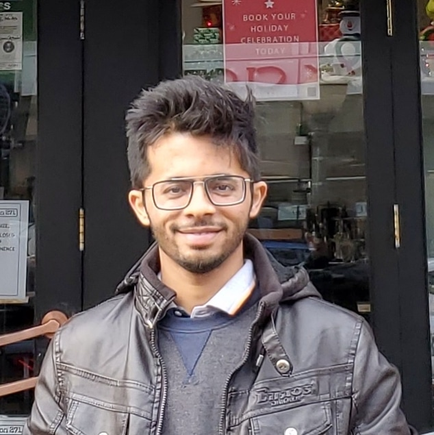

|  |
Saurabh Mahindre


|
Hello everyone, I am Saurabh!
Check out my blog posts about Machine Learning ! Blog
My primary interest is Machine Learning, applications to Vision and NLP, and resource-efficient learning algorithms.
I like working on and have extensive experience in using ML & Deep Learning in problem areas such as NLP, Vision, and applications in finance and eCommerce.
Publications:
2022: I am currently working on Machine Learning problems at Oracle in AI Apps team.
2021: I graduated with a Masters degree in Data Science and ML from University at Buffalo.
In Summer 2020, I worked at IBM T.J Watson Research Center as a part of IBM Research's Internship programme.
I was part of the AI Compute Group where I implemented novel and compact deep neural network algorithms and demonstrated improvements using purely Boolean Functions and added optimization schemes. We tested the performance increase on various datasets and probed implementations on embedded devices like FPGAs.
Previously I have applied quantitative techniques like machine learning while working at leading payments firm Paytm till 2019.
I contribute to open-source and have done so while being supported by Google during two Google Summer of Code projects in 2014 and 2016.
I am also currently Top 2% in Kaggle ML Competitions.
I spent a wonderful time while completing my Bachelor's in Electronics Engineering at BITS Pilani Goa Campus